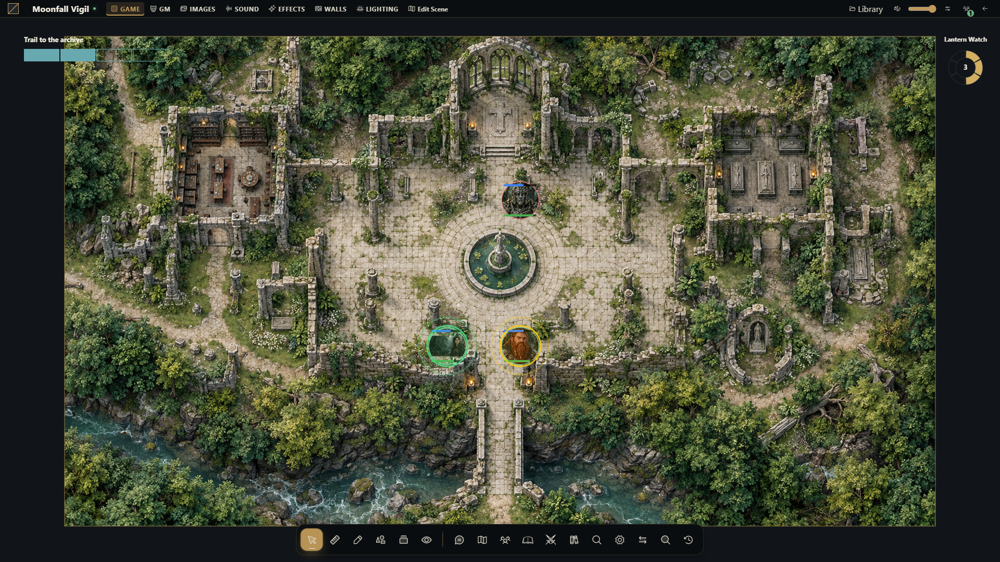

Importação e exportação Universal VTT
Fluxos de importação e exportação, coordenadas, limites e autorização.


Documentação · English · Map Builder
Use Universal VTT para trazer um mapa pronto, sua grade, paredes, portas e luzes ao Gravewright, ou para baixar uma cópia de intercâmbio de uma cena nativa. Somente um GM da campanha pode importar ou exportar. As cenas importadas começam visíveis apenas para o GM e não substituem a cena transmitida aos jogadores.
Escolha o tipo de importação
O Builder oferece duas ações de importação diferentes:
| O que você tem | Ação | Resultado |
|---|---|---|
Um arquivo .uvtt, .dd2vtt ou .df2vtt com imagem e dados do mapa | Importar Universal VTT no Builder | Uma cena nativa nova vinculada a um projeto editável, com paredes, portas e luzes compatíveis |
| O mesmo arquivo, quando você precisa apenas de uma cena de jogo | Nova cena → Importar Universal VTT | Uma cena nativa; use Editar com MapBuilder depois para criar seu projeto |
| Uma imagem PNG, JPEG, WebP ou TIFF | Importar mapa pronto | Um fundo no projeto atual do Builder; adicione paredes, objetos, luzes e comportamentos sobre ele |
Para uma imagem, escolha Biblioteca → Importar → Importar mapa pronto, ou a mesma ação em Configurações ou Projetos salvos. Envie uma imagem (até 25 MB) ou escolha uma imagem existente da campanha, defina largura e altura em células e o tamanho da célula, então escolha Usar imagem do mapa. A imagem preenche o mapa sob suas camadas. As alterações do projeto são salvas automaticamente; Gerar cena ou Atualizar cena as aplica ao jogo. Consulte Importar um mapa pronto para substituição, remoção e Desfazer/Refazer.
Uma importação Universal VTT não reconstrói as pinceladas, os assets individuais ou as camadas do Builder a partir do fundo achatado. Importar pelo Builder salva primeiro o rascunho atual, cria outro projeto vinculado e o abre no editor. Geometria de colisão e luzes compatíveis continuam editáveis; o fundo achatado continua sendo uma imagem. Nos dois caminhos, a nova cena é reservada ao mestre.
Importe uma cena Universal VTT
Em Cenas, escolha Nova cena → Importar Universal VTT. Para importar em uma pasta de cenas, inicie a ação de nova cena nessa pasta. O mesmo importador está disponível em Projetos salvos → Importar Universal VTT no Builder.
Selecione o Arquivo Universal VTT e confira o Nome da cena. Selecionar um arquivo preenche o nome vazio a partir do nome do arquivo; você pode alterá-lo. O nome deve ter de 1 a 120 caracteres. A janela não tem controles de grade ou iluminação: esses valores vêm do arquivo.
Escolha Importar cena e aguarde o resultado. A janela de importação não pode ser fechada enquanto essa solicitação estiver em andamento.
Leia os avisos e escolha Fechar. Os avisos descrevem a cena já criada; não há etapa de aprovação ou prévia antes da criação.
Confira a cena em Cenas. Verifique o alinhamento da grade, as aberturas nas paredes, o estado das portas e a iluminação com as ferramentas nativas antes de ativá-la para os jogadores.
A pasta de destino vem da ação que abriu o importador; não há seletor de pasta na janela. A pasta deve pertencer a esta campanha. O fundo é armazenado como tiles da cena, enquanto paredes, portas e luzes continuam sendo objetos nativos editáveis. A importação pelo diretório de cenas não cria projeto do Builder; pelo Builder, cria e abre um projeto. Nenhum caminho sobrescreve uma cena ou rascunho existente. Atualizar cena aplica as edições à mesma cena vinculada. Os avisos informam quais objetos precisam continuar nativos.
Entenda os avisos da importação
Os avisos indicam uma aproximação importada, em vez de uma falha na importação:
| Assunto do aviso | O que conferir |
|---|---|
| Portais importados como portas | Todo portal vira uma porta. Confira janelas pretendidas, comportamento de movimento e visão e se cada abertura deve começar aberta ou fechada. |
| Cor ambiente | A luz ambiente colorida vira uma aproximação por meio da escuridão da cena. |
| Iluminação incorporada | As luzes começam desativadas porque o arquivo informa que a imagem já contém iluminação. Confira antes de ativá-las para evitar iluminar a imagem duas vezes. |
| Alcance ou intensidade da luz | Alcances acima de 200 células e intensidades acima de 1 são limitados a esses máximos. |
| Luzes de alcance zero | Começam desativadas. Defina um raio nativo adequado antes de ativá-las. |
| Sombras por luz | As configurações de sombra por luz não têm equivalente direto. |
| Segmentos de parede degenerados | Segmentos extremamente curtos foram ignorados; confira a parede ao redor. |
Recupere-se de um erro de importação
Se a validação falhar, leia a mensagem, corrija o nome ou o arquivo de origem e escolha Importar cena novamente. Arquivos inválidos, imagens não aceitas ou geometria excessiva não deixam uma cena criada parcialmente. Se o arquivo contiver luzes e a instalação informar A iluminação dinâmica está desativada, o operador precisa ativar esse recurso ou fornecer um arquivo sem luzes.
Se a conexão falhar, o servidor pode já ter concluído a importação. Mantenha a mesma janela aberta, deixe o arquivo e o nome sem alterações e escolha Importar cena novamente: a janela reutiliza o UUID da operação, e o servidor retorna o resultado original em vez de criar outra cena. Não há um botão separado de repetição nem repetição automática.
Alterar qualquer um dos campos ou reabrir a janela inicia uma nova operação. Depois de fechar a janela ou recarregar a página após um resultado incerto, confira Cenas antes de importar novamente, para evitar criar uma segunda cena.
Exporte a cena atual
Se estiver trabalhando no Builder, primeiro conclua Gerar cena ou Atualizar cena. O salvamento automático armazena o projeto; a exportação lê a cena nativa já aplicada ao jogo, incluindo suas edições nativas posteriores. Um projeto salvo ou um rascunho não publicado não é a origem da exportação.
Clique com o botão direito na cena em Cenas e escolha Exportar Universal VTT.
Escolha Preparar exportação e aguarde o término da preparação.
Confira os avisos e escolha Baixar Universal VTT para salvar um arquivo
.uvtt.
O download preparado é uma cópia daquele momento. Se a cena mudar depois da preparação, feche e reabra o exportador para preparar uma cópia nova. Você pode fechar a janela de exportação enquanto a preparação estiver em andamento. A exportação não modifica cena, projeto, recibos nem imagens armazenadas.
O que o download preserva
| Conteúdo | Representação exportada |
|---|---|
| Fundo do mapa e imagens visíveis da cena | Um PNG incorporado; objetos de imagem individuais e materiais viram pixels |
| Pisos e paredes dinâmicos | Achatados com material, máscara, opacidade, rotação e apagamento por camada atuais |
| Imagem das portas | Aparência atual, incluindo o giro de abertura de 90° em torno de uma âncora explícita no início, centro ou fim |
| Grade e origem | Tamanho da célula e alinhamento das coordenadas; tamanhos fracionários em pixels são arredondados e o raster é reamostrado, com aviso |
| Paredes e portas | Segmentos de parede e portais refletindo o estado aberto/fechado atual |
| Luzes nativas ativadas | Posição, cor, intensidade e alcance; cones, animação, elevação e alcances ilimitados são aproximados |
Imagens exclusivas do GM são omitidas. Trancas, apresentação de portas secretas, faixas de altura e canais separados de barreira para movimento, visão, luz e som não são preservados. A geometria de uma porta secreta ainda pode estar presente: confira o arquivo antes de compartilhá-lo com os jogadores.
Blueprints, variáveis, temporizadores, regiões de presença, tokens, cartas, marcadores, permissões de diários, partículas, shaders, névoa, desenhos e áudio não são transferidos. Luzes desativadas são omitidas. O arquivo não restaura um projeto do Builder nem o estado da campanha, e a interpretação de outro aplicativo pode diferir. Mantenha o projeto original e use o processo de backup da instalação para recuperação.
Se a preparação falhar, leia o erro antes de tentar novamente. Tiles de fundo ausentes ou ilegíveis e limites de composição excedidos impedem uma exportação completa; a janela não oferece um download parcial.
Contrato de formato e coordenadas
O contêiner aceito é JSON com format: 0.2 ou format: 0.3 numérico; as três
extensões usam esse contrato. A exportação usa 0.2. São versões de intercâmbio,
independentes da versão do aplicativo Gravewright. A importação exige uma imagem
PNG ou WebP de um único quadro, incorporada em base64 puro, não uma data URL,
caminho de arquivo ou URL remota. Os metadados da imagem são removidos; a
orientação EXIF não é aplicada às coordenadas do mapa.
| Campo de entrada | Interpretação |
|---|---|
resolution.map_size | Largura (x) e altura (y) positivas, em células |
resolution.pixels_per_grid | Número integral de pixels por célula (70 e 70.0 são equivalentes) |
resolution.map_origin | Deslocamento da origem em células; valores fracionários mantêm o alinhamento da grade |
line_of_sight, objects_line_of_sight | Polilinhas divididas em segmentos consecutivos de parede nativa |
portals[].bounds | Dois extremos que definem a porta nativa; paredes colineares são recortadas ao redor da abertura |
portals[].closed | Booleano obrigatório: true significa fechada, false significa aberta |
lights[] | Posição e alcance em células, intensidade, cor e configuração de sombra |
environment | Indicador de iluminação incorporada e cor ambiente |
As dimensões da imagem devem ser iguais aos produtos arredondados de map_size
e pixels_per_grid. Por exemplo, um mapa de 20 × 15 células a 70 pixels por
célula precisa de uma imagem de 1400 × 1050 pixels. As posições dos objetos viram
(ponto - map_origin) × pixels_per_grid. Os extremos dos portais determinam a
geometria das portas; position, rotation e freestanding dos portais não
acrescentam posicionamento ou comportamento nativo separado.
O recorte dos portais usa um adaptador de geometria separado e limitado, com
tolerância de até 0,05 pixel para arredondamentos ao encontrar uma parede
colinear. Mantém as coordenadas originais da porta; paredes além dessa tolerância
não são afetadas. Identificações opcionais do programa e do criador são metadados
limitados; nunca viram caminhos ou dados executáveis.
As cores aceitam seis dígitos RRGGBB ou oito dígitos AARRGGBB, com #
opcional. O alfa da luz multiplica a intensidade já limitada. Por exemplo, a cor
80ff0000 e intensidade 1 produzem uma luz vermelha com intensidade aproximada
de 0,502. O alcance importado vira o raio de luz fraca, com raio de luz forte
igual a zero.
Limites e autorização
Estes limites se somam à configuração da instalação:
| Recurso | Limite |
|---|---|
| JSON enviado/baixado | 64 MiB |
| Imagem comprimida incorporada | 48 MiB |
| Área do raster | 16.777.216 pixels, ou o menor limite configurado de mapas/Pillow |
| Objetos nativos, incluindo segmentos de parede após recortar portais | 5.000 |
| Vértices das linhas de visão | 20.000 |
| Verificações de interseção parede/portal | 2.000.000 |
| Grupos de composição de pisos na exportação | 32 |
| Trabalho acumulado de composição na exportação | 134.217.728 pixels |
| Pixels por célula da grade | Inteiro de 1 a 10.000 |
| Alcance / intensidade de entrada | Finitos, não negativos, até 1.000.000; limitados aos máximos nativos de 200 células / 1 |
Os limites configurados de upload, dimensões de imagem e quantidade de tiles podem ser menores. Chaves JSON duplicadas, números ou base64 inválidos, imagens não aceitas ou animadas, dimensões inconsistentes e geometria excessiva são rejeitados. Nomes de arquivo enviados nunca viram caminhos no servidor. As imagens usadas na exportação devem pertencer à campanha; máscaras geradas também devem pertencer àquela cena exata.
Jogadores e streamers não podem importar ou exportar. A importação verifica novamente o vínculo de GM e a posse da pasta antes de confirmar, registra um recibo e remove os tiles novos se a operação falhar. O mesmo UUID de solicitação com o mesmo arquivo, nome e pasta repete o resultado original; um payload alterado com esse UUID é rejeitado como conflito. A importação pela interface pública nunca ativa a cena nova para os jogadores.
Contrato HTTP e verificações da implementação
POST /api/containers/{campanha}/universal-vtt/import: multipartfile,name,request_id,folderIdopcional e a string opcionalbuilderEditable: "true" | "false"(padrão falso); retorna{scene, warnings, builderEditable}eprojectno modo editável. O modo participa da identificação do recibo; cena, projeto e arquivos são revertidos juntos.GET /api/maps/{cena}/universal-vtt: retorna{filename, document, warnings}.documenté o JSON UVTT para download.
O serviço fica em universal_vtt.py, com views HTTP exclusivas do GM e a janela de importação/exportação. Os testes focados cobrem geometria, conversão de grade/ARGB, imagens atuais, recibos, rollback, isolamento e limites. O cenário de navegador cobre as janelas públicas, repetição após perda de resposta, downloads, ida e volta e limites de acesso por papel. Use os ambientes isolados descritos em Testes. O adaptador de cenas compartilhado também atende Editar com MapBuilder. Os testes de integração cobrem identidade da cena, edições nativas, clonagem e rollback; os testes de validação cobrem limites exatos, escala da imagem, propriedades exclusivas da cena e quantidade limitada de consultas.